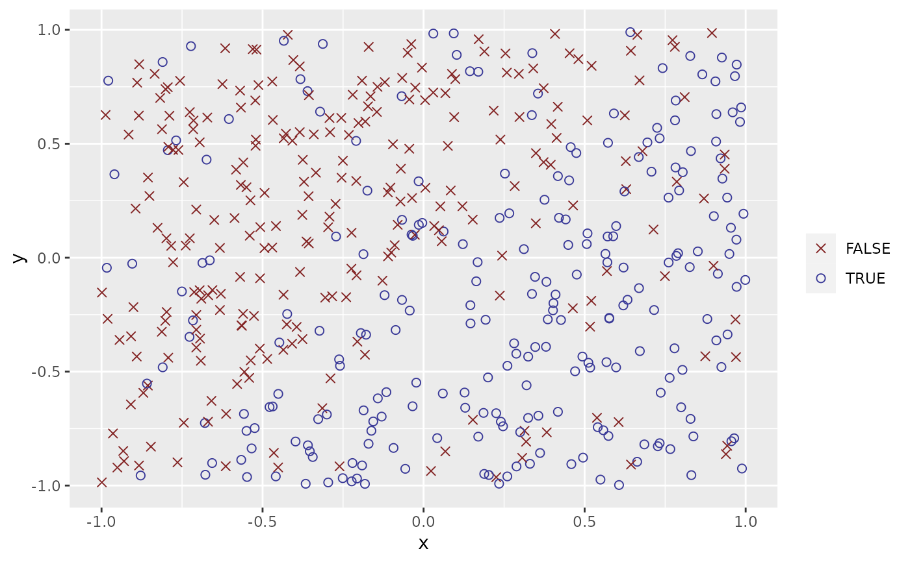

Generate data sets to apply binary classifiers
Usage
sim_response_xy(
n = 500,
x_dist = purrr::partial(runif, min = -1, max = 1),
y_dist = x_dist,
relationship = function(x, y) x > y,
noise = 0.2
)Arguments
- n
An intenger
- x_dist
A random number generation function.
- y_dist
A random number generation function.
- relationship
A function specify the relationship between x, y and the response. A function f(x, y) need return a logical value.
- noise
A number between 0 and 1.
Examples
set.seed(123)
df <- sim_response_xy(n = 500)
df
#> # A tibble: 500 × 3
#> response x y
#> <fct> <dbl> <dbl>
#> 1 FALSE -0.425 -0.293
#> 2 TRUE 0.577 -0.267
#> 3 FALSE -0.182 -0.426
#> 4 TRUE 0.766 -0.840
#> 5 TRUE 0.881 -0.269
#> 6 FALSE -0.909 -0.644
#> 7 FALSE 0.0562 0.0721
#> 8 TRUE 0.785 0.00790
#> 9 TRUE 0.103 0.890
#> 10 TRUE -0.0868 -0.317
#> # … with 490 more rows
plot(df)
